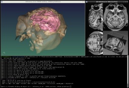
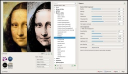
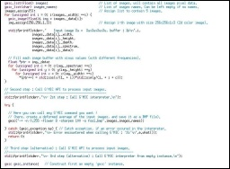
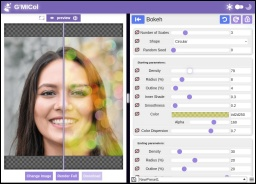
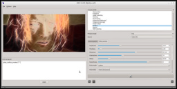
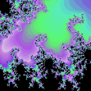
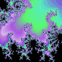

|
Gmicky, the G'MIC mascot
(artwork by David Revoy)
Latest donations received:


|
G'MIC is a full-featured open-source
framework for digital image processing,
distributed under the
CeCILL free software licenses (LGPL-like and/or GPL-compatible).
It provides several user interfaces to convert / process / visualize
generic image datasets, ranging from 1D scalar signals to 3D+t sequences of multi-spectral volumetric images, hence including 2D color images.
We provide these different G'MIC user interfaces:
1 - gmic, a command-line tool to use the G'MIC image processing features from a shell.
In this setting, G'MIC may be seen as a friendly companion to the ImageMagick
or GraphicsMagick software suites.
[learn more...]
|

gmic, the command-line interface of G'MIC. |
2 - G'MIC-Qt, a plug-in to bring G'MIC capabilities
to the image retouching and painting software GIMP, Krita,
Photoshop,
Affinity Photo,
PaintShop Pro,
PhotoLine
and Paint.NET.
More than 500 filters are already available, sorted by category (Artistic, Black & white, Colors, Contours, Deformations, Degradations, Details, Color Grading, Frames, Layers,
Light & shadows, Patterns, Rendering, Repair, Sequences, etc.).
[download...]
|

The G'MIC plug-in in action! |
3 - libgmic, a small, portable, thread-safe and multi-threaded, C++ image processing library to be linked to third-party applications.
Its simple API allows programmers to add all G'MIC features in their own software without much efforts
(a C API is available as well).
[learn more...]
|

libgmic, a small, thread-safe, multi-threaded, C++ image processing library to embed all G'MIC features
in third-party applications. |
4 - G'MIC Online, a web service to allow users applying image processing algorithms
on their images, directly from a web browser.
[try it now...]
|

G'MIC Online, the web service to use G'MIC from a browser. |
5 - ZArtScreenshot of ZArt in action.,
a Qt-based interface for real-time processing of video streaming coming from webcams or video files.
[learn more...]
|

ZArt, a real-time video processing software using the G'MIC processing library. |
Other open-source projects are known to use some of the G'MIC features:
- EKD, a free software dedicated to postproduction processing for videos and images.
- Flowblade, a multitrack non-linear video editor for Linux released under GPL 3 license.
- Photoflow, a fully non-destructive photo retouching program.
- Veejay, a visual instrument and realtime video sampler.
The G'MIC source code has been registered to the APP
(French Agency for the Protection of Programs) by the CNRS,
under registration number:
IDDN.FR.001.170024.000.S.P.2017.000.21000.
|
 

{kind=link}
{kind=link}
{kind=link}
{kind=link}
{kind=link}
{kind=link}